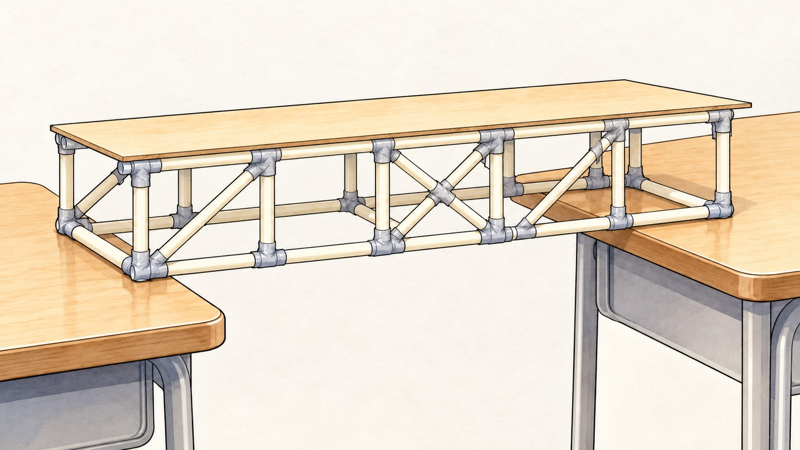
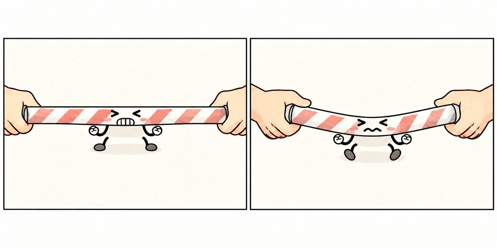
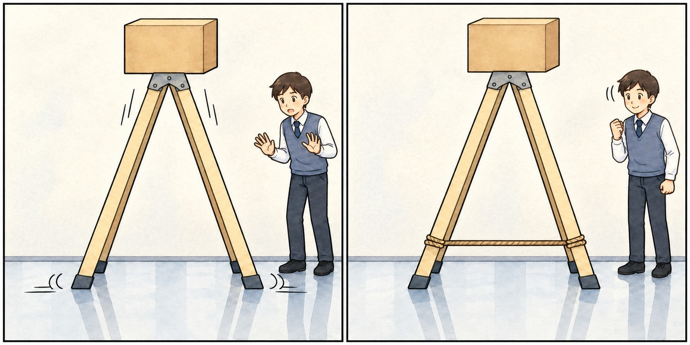
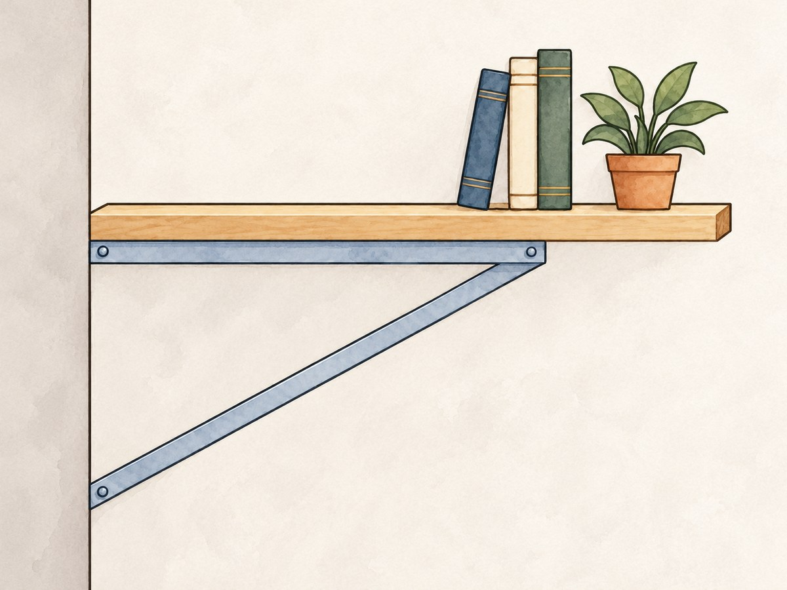

0차시 · 힘을 벡터로 나타내기
빨대 다리에 추를 올리자 위쪽 막대가 휘었다.
이음점에서는 어떤 막대가 밀고 어떤 막대가 당길까?
0차시 · 힘을 벡터로 나타내기

빨대로 만든 다른 모양의 다리
0차시 · 힘을 벡터로 나타내기
구조물에서 막대와 막대가 만나는 점을 이음점, 두 이음점을 잇는 부분을 막대라고 한다.
오른쪽을 $x$축의 양의 방향, 위쪽을 $y$축의 양의 방향으로 정한다.
힘의 단위는 $\mathrm{N}$(뉴턴)이며, 힘의 성분은 모두 $\mathrm{N}$ 단위이다.
1. 힘을 벡터로 나타내기
화살표의 방향은 힘의 방향, 길이는 힘의 크기이다.
오른쪽으로 $3$, 위로 $4$인 힘은 $\vec{F}=(3,\,4)$
$3$을 $x$성분, $4$를 $y$성분이라고 한다.
크기 $|\vec{F}|=\sqrt{3^2+4^2}=5$
$(-3,\,4)$처럼 성분은 음수일 수 있지만,
크기 $\sqrt{(-3)^2+4^2}=5$는 음수가 아니다.
1. 힘을 벡터로 나타내기
점 $\mathrm{P}$가 $\vec{F}_1=(4,\,1)$, $\vec{F}_2=(-1,\,3)$을 받는다.
$\vec{F}_2$를 $\vec{F}_1$의 끝으로 옮겨 잇는다.
$\vec{F}_1+\vec{F}_2=(4+(-1),\ 1+3)=$ $(3,\,4)$
합이 $\vec{0}$이 아니면 그 점은 합의 방향으로 움직이려 한다.
$\vec{F}_3=(-3,\,-4)$도 받는다면?
$\vec{F}_1+\vec{F}_2+\vec{F}_3=(4-1-3,\ 1+3-4)=$ $(0,\,0)=\vec{0}$
합이 영벡터 $\vec{0}$이면 힘이 서로 비겨,
처음에 정지해 있던 점은 정지 상태를 유지한다.
화살표를 이으면 출발점으로 돌아온다.
1. 힘을 벡터로 나타내기
그래야 화살표가 막대 쪽을 향하는지,
막대 반대쪽을 향하는지 판단할 수 있다.
1. 힘을 벡터로 나타내기
막대가 늘어나려 하는 상태를 당김(인장), 줄어들려 하는 상태를 누름(압축)이라고 한다.
그네 줄은 당김을, 책상 다리는 누름을 받는다.

양 끝을 당기면 막대는 늘어나려 하고, 양 끝을 밀면 줄어들려 하며 옆으로 휘기도 한다.
1. 힘을 벡터로 나타내기
같은 막대의 같은 끝(오른쪽 끝)에서 ①과 ③을 비교한다.
2. 한 점이 받는 힘
이음점 $\mathrm{O}$는 두 막대 $\overline{\mathrm{OL}}$, $\overline{\mathrm{OR}}$로 받쳐져 있고, 아래로 하중을 받는다. 점 $\mathrm{L}$, $\mathrm{R}$은 바닥에 고정된 받침이다.
점 $\mathrm{O}$가 받는 세 힘은
$\vec{F}_1=(3,\,4)$, $\vec{F}_2=(-3,\,4)$, $\vec{F}_3=(0,\,-8)$이다.
2. 한 점이 받는 힘 · 예제 1
당김 / 누름은 막대가 주는 힘에만 쓴다. 하중·받침은 "—"
| 힘 | 힘을 주는 것 | 벡터 | 크기 | 막대의 당김 / 누름 |
|---|---|---|---|---|
| $\vec{F}_1$ | 막대 $\overline{\mathrm{OL}}$ | $(3,\,4)$ | $5$ | 누름 |
| $\vec{F}_2$ | 막대 $\overline{\mathrm{OR}}$ | $(-3,\,4)$ | $5$ | 누름 |
| $\vec{F}_3$ | 하중 | $(0,\,-8)$ | $8$ | — |
$\vec{F}_1+\vec{F}_2+\vec{F}_3=(3-3+0,\ 4+4-8)=$ $(0,\,0)=\vec{0}$
화살표를 이으면 출발점 $\mathrm{O}$로 돌아온다.
→ 처음에 정지해 있던 점 $\mathrm{O}$는 정지 상태를 유지한다.
$\vec{F}_1$은 막대 $\overline{\mathrm{OL}}$ 반대쪽을 향한다 → $\overline{\mathrm{OL}}$은 누름 ($\overline{\mathrm{OR}}$도 같다)
2. 한 점이 받는 힘 · 예제 1
| 힘 | 힘을 주는 것 | 벡터 | 크기 | 막대의 당김 / 누름 |
|---|---|---|---|---|
| $\vec{G}_1$ | 막대 $\overline{\mathrm{OL}}$ | $(-3,\,-4)$ | $5$ | 누름 |
| $\vec{G}_2$ | 받침 | $(3,\,4)$ | $5$ | — |
| 힘 | 힘을 주는 것 | 벡터 | 크기 | 막대의 당김 / 누름 |
|---|---|---|---|---|
| $\vec{H}_1$ | 막대 $\overline{\mathrm{OR}}$ | $(3,\,-4)$ | $5$ | 누름 |
| $\vec{H}_2$ | 받침 | $(-3,\,4)$ | $5$ | — |
받침이 주는 힘의 $x$성분을 보면, 받침은 두 다리의 끝 $\mathrm{L}$, $\mathrm{R}$을 안쪽으로 붙잡아야 한다.
2. 한 점이 받는 힘 · 예제 1

미끄러운 바닥에서는 사다리 다리가 벌어지지만, 두 다리 아래를 줄로 이으면 버틴다.
예제 1에서 다리 끝을 안쪽으로 붙잡은 것은 받침이었다.
사다리에서는 무엇이 그 일을 할까?
2. 한 점이 받는 힘
옷걸이처럼 수평인 막대 $\overline{\mathrm{AB}}$의 양 끝에 같은 무게의 물체를 매달고, 두 줄 $\overline{\mathrm{AC}}$, $\overline{\mathrm{BC}}$를 고리 $\mathrm{C}$에 묶었다.
막대와 두 점은 움직이지 않는다.
2. 한 점이 받는 힘 · 문제 1
합이 $\vec{0}$이 되도록 막대 $\overline{\mathrm{AB}}$가 주는 힘을 구한다.
| 힘 | 힘을 주는 것 | 벡터 | 크기 | 막대·줄의 당김 / 누름 |
|---|---|---|---|---|
| $\vec{F}_1$ | 물체 | $(0,\,-4)$ | $4$ | — |
| $\vec{F}_2$ | 줄 $\overline{\mathrm{AC}}$ | $(3,\,4)$ | $5$ | 당김 |
| $\vec{F}_3$ | 막대 $\overline{\mathrm{AB}}$ | $(-3,\,0)$ | $3$ | 누름 |
| 힘 | 힘을 주는 것 | 벡터 | 크기 | 막대·줄의 당김 / 누름 |
|---|---|---|---|---|
| $\vec{G}_1$ | 물체 | $(0,\,-4)$ | $4$ | — |
| $\vec{G}_2$ | 줄 $\overline{\mathrm{BC}}$ | $(-3,\,4)$ | $5$ | 당김 |
| $\vec{G}_3$ | 막대 $\overline{\mathrm{AB}}$ | $(3,\,0)$ | $3$ | 누름 |
$\vec{F}_1+\vec{F}_2=(0+3,\ -4+4)=$ $(3,\,0)$
→ $\vec{F}_3=(-3,\,0)$
막대 반대쪽(왼쪽)을 향한다 → 누름
2. 한 점이 받는 힘 · 문제 1
(3) 막대가 점 $\mathrm{A}$에 주는 힘과 점 $\mathrm{B}$에 주는 힘을 비교하면?
$(-3,\,0)$과 $(3,\,0)$: 크기 $3$으로 같고 방향은 반대
둘 다 막대 반대쪽 → 어느 끝에서 보아도 누름
(4) 두 줄을 바깥쪽 고리에 묶어 점 $\mathrm{A}$의 줄이 $(-3,\,4)$, 점 $\mathrm{B}$의 줄이 $(3,\,4)$로 당기면?
$(0,\,-4)+(-3,\,4)=(-3,\,0)$
→ 막대가 점 $\mathrm{A}$에 주는 힘은 $(3,\,0)$
막대 쪽을 향한다 → 당김
2. 한 점이 받는 힘
벽에 붙인 선반 받침의 이음점 $\mathrm{P}$는 막대 $\overline{\mathrm{PA}}$, $\overline{\mathrm{PB}}$와 연결되어 있고, 아래로 하중을 받는다. 점 $\mathrm{A}$, $\mathrm{B}$는 벽 위의 점이다.
점 $\mathrm{P}$가 받는 세 힘: $\vec{F}_1=(-8,\,0)$, $\vec{F}_2=(8,\,6)$, $\vec{F}_3=(0,\,-6)$

2. 한 점이 받는 힘 · 문제 2
| 힘 | 힘을 주는 것 | 벡터 | 크기 | 막대의 당김 / 누름 |
|---|---|---|---|---|
| $\vec{F}_1$ | 막대 $\overline{\mathrm{PA}}$ | $(-8,\,0)$ | $8$ | 당김 |
| $\vec{F}_2$ | 막대 $\overline{\mathrm{PB}}$ | $(8,\,6)$ | $10$ | 누름 |
| $\vec{F}_3$ | 하중 | $(0,\,-6)$ | $6$ | — |
$\vec{F}_1+\vec{F}_2+\vec{F}_3=(-8+8+0,\ 0+6-6)=$ $\vec{0}$
→ 점 $\mathrm{P}$는 정지 상태를 유지한다.
한 이음점에 당김과 누름이 함께 나타난다.
2. 한 점이 받는 힘 · 문제 2
| 힘 | 힘을 주는 것 | 벡터 | 크기 | 막대의 당김 / 누름 |
|---|---|---|---|---|
| $\vec{G}_1$ | 막대 $\overline{\mathrm{PA}}$ | $(8,\,0)$ | $8$ | 당김 |
| $\vec{G}_2$ | 벽 | $(-8,\,0)$ | $8$ | — |
| 힘 | 힘을 주는 것 | 벡터 | 크기 | 막대의 당김 / 누름 |
|---|---|---|---|---|
| $\vec{H}_1$ | 막대 $\overline{\mathrm{PB}}$ | $(-8,\,-6)$ | $10$ | 누름 |
| $\vec{H}_2$ | 벽 | $(8,\,6)$ | $10$ | — |
위쪽 연결은 빠지지 않게, 아래쪽 연결은 밀려도 견디게 고정한다.
2. 한 점이 받는 힘 · 문제 2
하중이 $(0,\,-10)$으로 커졌지만 두 막대는 (1)보다 큰 힘을 낼 수 없어서, 두 막대가 점 $\mathrm{P}$에 주는 힘이 (1)과 같다고 하자.
점 $\mathrm{P}$가 받는 힘의 합은? 점 $\mathrm{P}$는 어떻게 될까?
$\vec{F}_1+\vec{F}_2+(0,\,-10)$
$=(-8+8+0,\ 0+6-10)=$ $(0,\,-4)$
합이 $\vec{0}$이 아니고 아래쪽 → 점 $\mathrm{P}$는 아래로 움직이려 한다.
당김을 받던 $\overline{\mathrm{PA}}$는 빠지거나 끊어지고, 누름을 받던 $\overline{\mathrm{PB}}$는 휘거나 꺾일 수 있다.
처짐은 움직일 방향을 보여 주는 그림이며,
실제 변형량을 나타내지 않는다.
3. 삼각형 구조의 해석
한 변의 길이가 $4\,\mathrm{cm}$인 정삼각형 $\mathrm{ABC}$ 모양의 구조에서 꼭대기 이음점 $\mathrm{C}$에 하중 $\vec{W}=(0,\,-6)$이 작용한다.
두 막대 $\overline{\mathrm{AC}}$, $\overline{\mathrm{BC}}$가 점 $\mathrm{C}$에 주는 힘을 구하고, 밑변 $\overline{\mathrm{AB}}$가 받는 힘을 알아보자.
3. 삼각형 구조의 해석 · 예제 2
방향은 그림에서
$\overrightarrow{\mathrm{AC}}=(2,\,2\sqrt{3})$과 나란하다
→ $x$성분 $:$ $y$성분 $=1:\sqrt{3}$
대칭이므로 하중을 반씩
두 힘의 $y$성분은 각각 $3$
성분의 비로 $x$성분
$a:3=1:\sqrt{3}$ → $a=\dfrac{3}{\sqrt{3}}=\sqrt{3}$
$\vec{F}_1=(\sqrt{3},\,3)$, $\vec{F}_2=(-\sqrt{3},\,3)$
$\vec{F}_1+\vec{F}_2+\vec{W}=$ $\vec{0}$
크기 $\sqrt{(\sqrt{3})^2+3^2}=2\sqrt{3}$
둘 다 막대 반대쪽(위쪽) → 누름
3. 삼각형 구조의 해석 · 예제 2
밑변 $\overline{\mathrm{AB}}$는 당김일까, 누름일까?
두 받침이 하중을 반씩 받치므로 받침이 점 $\mathrm{A}$에 주는 힘은 $(0,\,3)$
| 힘 | 힘을 주는 것 | 벡터 | 크기 | 막대의 당김 / 누름 |
|---|---|---|---|---|
| $\vec{G}_1$ | 막대 $\overline{\mathrm{AC}}$ | $(-\sqrt{3},\,-3)$ | $2\sqrt{3}$ | 누름 |
| $\vec{G}_2$ | 받침 | $(0,\,3)$ | $3$ | — |
| $\vec{G}_3$ | 막대 $\overline{\mathrm{AB}}$ | $(\sqrt{3},\,0)$ | $\sqrt{3}$ | 당김 |
$(-\sqrt{3},\,-3)+(0,\,3)+(\sqrt{3},\,0)=$ $\vec{0}$
밑변의 힘은 막대 $\overline{\mathrm{AB}}$ 쪽을 향한다 → 당김
빗변이 바깥으로 미는 다리 끝을 밑변이 안쪽으로 붙잡는다.
(사다리의 줄, 예제 1의 받침)
3. 삼각형 구조의 해석
예제 2의 구조에서
3. 삼각형 구조의 해석
밑변 $\overline{\mathrm{AB}}$의 길이가 $4\,\mathrm{cm}$이고 두 밑각의 크기가 $45^\circ$인 직각이등변삼각형 $\mathrm{ABC}$ 모양의 구조에서 꼭대기 이음점 $\mathrm{C}$에 하중 $\vec{W}=(0,\,-6)$이 작용한다.
점 $\mathrm{A}$는 고정 받침, 점 $\mathrm{B}$는 바퀴 받침이고, 받침이 점 $\mathrm{A}$에 주는 힘은 $(0,\,3)$이다.
3. 삼각형 구조의 해석 · 문제 4
| 힘 | 힘을 주는 것 | 벡터 | 크기 | 막대의 당김 / 누름 |
|---|---|---|---|---|
| $\vec{F}_1$ | 막대 $\overline{\mathrm{AC}}$ | $(3,\,3)$ | $3\sqrt{2}$ | 누름 |
| $\vec{F}_2$ | 막대 $\overline{\mathrm{BC}}$ | $(-3,\,3)$ | $3\sqrt{2}$ | 누름 |
| $\vec{W}$ | 하중 | $(0,\,-6)$ | $6$ | — |
$\vec{F}_1+\vec{F}_2+\vec{W}=(3-3+0,\ 3+3-6)=$ $\vec{0}$
| 힘 | 힘을 주는 것 | 벡터 | 크기 | 막대의 당김 / 누름 |
|---|---|---|---|---|
| $\vec{G}_1$ | 막대 $\overline{\mathrm{AC}}$ | $(-3,\,-3)$ | $3\sqrt{2}$ | 누름 |
| $\vec{G}_2$ | 받침 | $(0,\,3)$ | $3$ | — |
| $\vec{G}_3$ | 막대 $\overline{\mathrm{AB}}$ | $(3,\,0)$ | $3$ | 당김 |
합 $\vec{0}$, 밑변의 힘은 막대 쪽 → 밑변은 당김
3. 삼각형 구조의 해석 · 문제 4
빗변과 밑변이 받는 힘의 크기는 어떻게 달라졌나? 그 까닭을 삼각형의 모양과 연결하면?
| 힘의 크기 | 정삼각형 (예제 2) | 직각이등변삼각형 (문제 4) |
|---|---|---|
| 빗변 | $2\sqrt{3}$ | $3\sqrt{2}$ |
| 밑변 | $\sqrt{3}$ | $3$ |
마무리
누가 밀고 누가 당기는지
이제 화살표로 말할 수 있을까?
1~3차시: 우리 모둠의 빨대 다리에서 같은 방법으로 힘을 해석한다.